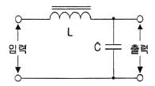
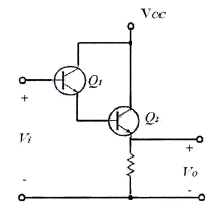
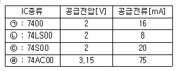
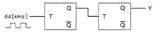
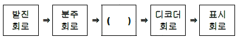
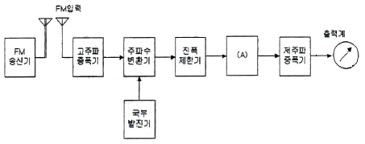
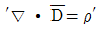

무선설비산업기사 (2013-10-12 기출문제)
1과목: 디지털 전자회로
1. 제너다이오드에서 제너전압이 10[V], 전력이 5[W]인 경우 최대전류의 크기는?
- 0.⑤[A]
- 0.5[A]
- 0.⑤[mA]
- 0.5[mA]
(정답률: 79%)

2. 다음 중 3상 반파 정류회로의 설명으로 알맞지 않은 것은?
- 변압기의 이용률이 좋다.
- 출력 전압의 맥동 주파수는 전원 주파수의 3배이다.
- 부하 정류 전류는 다이오드 1개에 3배의 전류가 흐른다.
- 직류분에 대한 맥동률은 작으나 전압 변동률은 단상보다 크다.
(정답률: 64%)
3. 다음 그림과 같은 초크 입력형 평활회로에서 출력측의 맥동 함유율을 작게 하려고 할 때 적합한 방법은?

- L과 C를 모두 크게 한다.
- L과 C를 모두 적게 한다.
- L을 크게 C를 작게 한다.
- C을 크게 L을 작게 한다.
(정답률: 90%)
4. 다음 중 트랜지스터 증폭회로에서 부궤환을 걸었을 때 일어나는 현상이 아닌 것은?
- 안정도가 좋아진다.
- 비직선 일그러짐이 적어진다.
- 주파수 특성이 개선된다.
- 대역폭이 감소한다.
(정답률: 75%)
5. 다음 회로의 설명으로 틀린 것은? (단, hfe1=Q1의 순방향 전압 증폭률, hfe2=Q2의 순방향 전압 증폭률)

- 트랜지스터 Q1과 Q2는 Darlington 접속이다.
- 전류증폭률은 (1+hfe1)(1+hfe2)이다.
- 입력저항이 대단히 높고 출력저항은 낮다.
- 전압이득이 1보다 크다.
(정답률: 80%)
6. 다음 중 그 값이 작을수록 좋은 것은?
- 증폭기 바이어스 회로의 안정계수
- 차동증폭기의 동상신호 제거비(CMRR)
- 증폭기의 신호대 잡음비
- 정류기의 정류효율
(정답률: 67%)
7. 다음 중 가장 효율이 좋은 증폭방식은?
- A급
- B급
- C급
- AB급
(정답률: 90%)
8. 다음 중 수정발진기에서 주파수 변동이 일어나는 주 원인이 아닌 것은?
- 주위 온도의 변화
- 부하의 변동
- 전원전압의 변동
- 동조점의 안정
(정답률: 70%)
9. 다음 중 무선송신기의 발진기 조건으로 잘못된 것은?
- 주파수 안정도가 높을 것
- 고조파 발생이 적을 것
- 부하의 변동에 영향이 클 것
- 주파수의 미세조정이 용이할 것
(정답률: 78%)
10. 진폭변조에서 반송파 전압이 5[V], 신호파 전압이 2[V]인 경우 변조도(m)는?
- 10[%]
- 20[%]
- 40[%]
- 60[%]
(정답률: 66%)
11. 다음 중 디지털 변복조 방식에 해당하지 않는 것은?
- ASK
- FSK
- SSB
- QAM
(정답률: 79%)
12. 다음 중 멀티바이브레이터에 대한 설명으로 틀린 것은?
- 부궤환으로 동작한다.
- 회로의 시정수가 주기로 결정된다.
- 출력에 고차의 고조파를 포함하고 있다.
- 전원전압이 변동해도 발진 주파수에는 큰 변화가 없다.
(정답률: 70%)
13. 50[Hz]의 주파수를 갖는 펄스열의 듀티 사이클(Duty Cycle)이 25[%]라면 펄스의 폭은 얼마인가?
- 50[ms]
- 20[ms]
- 5[ms]
- 1[ms]
(정답률: 67%)
14. 디지털 IC계열의 종류별 공급전압, 공급전류 특성이 다음 표와 같을 경우 논리장치인 CHIP의 전력소모가 가장 낮은 것은 어느 것인가?

- ㉠
- ㉡
- ㉢
- ㉣
(정답률: 87%)
15. 8진수 67을 16진수로 바르게 변환한 것은?
- 43
- 37
- 55
- 34
(정답률: 71%)
16. 다음 회로에서 Y는 어떤 파형이 출력되는가? (단, 입력은 64[kHz] 구형파이다.)

- 32[kHz] 구형파
- 24[kHz] 구형파
- 16[kHz] 구형파
- 8[kHz] 구형파
(정답률: 87%)
17. 다음은 디지털 시계의 블록 다이어그램이다. 괄호 안에 들어갈 알맞은 항목은 무엇인가?

- 플립플롭 회로
- 카운터 회로
- 증폭 회로
- 드라이브 회로
(정답률: 79%)
18. 다음 중 멀티플렉서에 대한 설명으로 틀린 것은?
- 여러 개의 데이터 입력을 적은 수의 채널로 전송한다.
- n개의 입력선과 2n개의 선택선으로 구성한다.
- 선택선은 비트조합에 의해 입력 중 하나가 선택된다.
- Data Selector라고도 할 수 있다.
(정답률: 84%)
19. 다음 중 연산증폭기의 응용 회로가 아닌 것은?
- 영전위 검출기
- FIR필터
- 비교기
- 피크 검출기
(정답률: 64%)
20. 전원이 차단되었을 때 데이터가 지워지는 소자는?
- EPROM
- EEPROM
- NVRAM
- SDRAM
(정답률: 79%)
2과목: 무선통신 기기
21. SSB 수신기의 스피치 클라리파이어(Speech Clarifier)의 사용 목적은?
- 반송파와 국부발진 주파수의 동기조정을 위하여
- 수신기의 선택 특성을 높이기 위하여
- 수신기의 이득을 높이기 위하여
- 수신기의 대역폭을 향상시키기 위하여
(정답률: 64%)
22. 다음 중 PCM 다중 통신방식의 특징에 대한 설명으로 틀린 것은?
- 넓은 주파수대역을 점유한다.
- 왜곡, 잡음, 누화 등의 방해가 적다.
- 양자화 잡음 등 PCM 특유의 잡음이 있다.
- 전송과정에서 열잡음, 왜곡잡음이 가산된다.
(정답률: 64%)
23. 정보신호의 진폭에 따라 반송파 신호의 주파수가 변화되는 변조 방식을 무엇이라 하는가?
- AM(Amplitude Modulation)
- SSB(Single Side Band)
- VSB(Vestigial Side Band)
- FM(Frequency Modulation)
(정답률: 76%)
24. PSK나 통신 방식의 한 종류인 QPSK는 몇 진 PSK와 같은가?
- 2진
- 4진
- 8진
- 16진
(정답률: 78%)
25. 다음 중 레이더의 방위 분해능을 개선하는 방법으로 틀린 것은?
- 가능한 파장이 짧은 전파를 이용한다.
- 스캐너의 길이는 가능한 길게 한다.
- 주파수가 높은 전파를 이용한다.
- 레이더 마스트의 높이를 높인다.
(정답률: 58%)
26. 전파전파(電波傳播)의 여러 가지 현상 중 태양의 폭발에 기인하여 생기는 현상을 무엇이라 하는가?
- 페이딩
- 야간 오차의 현상
- 전파의 회절현상
- 델린저 현상
(정답률: 84%)
27. 다음 중 페이딩(Fading) 감소를 위한 다이버시티 방식이 아닌 것은?
- 레이크 다이버시티
- 공간 다이버시티
- 시간 다이버시티
- 주파수 다이버시티
(정답률: 83%)
28. 위성에서 수신한 기가헤르츠[GHz] 대의 주파수 신호처리를 위해 먼저 낮은 주파수로 변환하게 되는데, 이 변환이 이루어지는 수신측의 장치는?
- 디멀티플렉서(Demultiplexer)
- 다이플렉서(Diplexer)
- 다운 컨버터(Down Converter)
- 저잡음 증폭기(LNA)
(정답률: 82%)
29. 등방성 안테나 이득을 표현할 때의 단위는?
- dBi
- dBm
- dBW
- dB
(정답률: 85%)
30. 이동 통신 기본회로에서 0.5[V]의 전압을 가지는 신호를 가해 5[V]로 증폭된 신호를 얻었다면 이때의 이득은 얼마인가? (단, 입출력 저항은 같다)
- 20[dB]
- 30[dB]
- 44[dB]
- 55[dB]
(정답률: 59%)
31. 다음 중 DC-DC 컨버터 중의 하나인 스위칭 레귤레이터의 장점에 대한 설명으로 틀린 것은?
- 전력효율이 높다.
- 일정한 출력 전압을 얻을 수 있다.
- 입력보다 출력이 높은 전압을 얻을 수 있다.
- 잡음이 적다.
(정답률: 59%)
32. 전원 전압의 변동 및 온도 변화 등에 의한 영향을 받지 않도록 하는 회로를 무엇이라 하는가?
- 안정화 전원회로
- 평활 회로
- 정류 회로
- 발진회로
(정답률: 75%)
33. 다음 중 축전지의 충전 종류(방식)가 아닌 것은?
- 초충전(Initial Charge)
- 평상충전(Normal Charge)
- 과충전(Over Charge)
- 이중충전(Double Charge)
(정답률: 73%)
34. 태양전지에서 만들어진 직류전기를 교류전기로 만들어주는 것은?
- 인버터
- 컨버터
- 광센서
- 콘트롤러
(정답률: 89%)
35. 다음 중 Oscilloscope의 브라운관에 나타난 리사쥬 도형을 이용하여 측정할 수 없는 것은?
- 변조도
- 두 신호의 위상차
- 주파수
- 안테나 패턴
(정답률: 58%)
36. FM수신기의 선택도 측정은 2개 이상의 신호를 수신기에 동시에 인가하여 ( ), ( ), ( )을 측정한다. 괄호 안에 들어갈 내용으로 적당하지 않은 것은?
- 감도억압효과 특성
- 혼변조 특성
- 상호변조 특성
- 주파수 안정도 특성
(정답률: 81%)
37. 급전선에서 부하저항이 60[Ω]일 때 측정된 반사계수가 0.5 이라면 이 급전선의 특성 임피던스는 얼마인가?
- 10[Ω]
- 15[Ω]
- 20[Ω]
- 50[Ω]
(정답률: 72%)
38. 다음 그림은 FM 송신기의 신호 대 잡음비의 측정구성도를 나타낸 것이다. (A)에 들어가야 하는 것은?

- 직선검파기
- 주파수변별기
- 가변감쇠기
- 수신기
(정답률: 81%)
39. 다음 중 마이크로파 송신기의 전력 측정에 사용되는 방향성 결합기를 이용하여 측정할 수 없는 것은?
- 반사계수
- 위상차
- 부하의 정합상태
- 결합도
(정답률: 52%)
40. 맥동률이 2.3[%]일 때 교류(리플)전압이 5.06[V]이면 이 때의 직류전압은 몇 [V]인가?
- 110[V]
- 220[V]
- 330[V]
- 440[V]
(정답률: 83%)
3과목: 안테나 개론
41. 다음 중 전계와 자계에 대한 설명으로 바른 것은?
- 자기력선은 발산이 있으나 전기력선은 없다.
- 전계와 자계 모두 에너지 보존법칙이 성립한다.
- 전계는 전류 및 자하에 의하여 형성된다.
- 전기력선은 항상 폐곡선을 형성한다.
(정답률: 84%)
42. 다음 중 전파의 성질에 대한 설명으로 틀린 것은?
- 전파는 종파이다.
- 전파는 균일 매질에서는 직진한다.
- 주파수가 낮을수록 회절하는 성질이 있다.
- 굴절율이 다른 매질의 경계면에서는 빛과 같이 반사하고 굴절한다.
(정답률: 85%)
43. 맥스웰 방정식에서

에 대한 설명으로 바른 것은?- 자계의 변화가 없으면 자계의 형태로 존재한다.
- 변화하는 전계에 의해 수직방향의 자계가 발생한다.
- 자계의 발생은 전하의 이동과 관련 없다.
- 전계는 전하에 의해 형성된다.
(정답률: 61%)
44. 다음 중 급전선에 대한 설명으로 맞는 것은?
- 전송 효율이 좋고 정합이 용이해야 한다.
- 특성임피던스는 길이와 관계가 있다.
- 감쇠정수가 커야 된다.
- 무왜곡 조건은 RG=CL로 정의된다.
(정답률: 78%)
45. 다음 중 도파관의 손실 및 전송 가능한 주파수 범위를 결정하는 요소가 아닌 것은?
- 도파관 단면의 형상
- 도파관 단면의 길이
- 도파관내 저역통과필터(LPF)의 설계
- 토파관내 전송파의 Mode
(정답률: 72%)
46. 동축 급전선에 대한 설명으로 적합하지 않은 것은?
- 평형 2선식 급전선에 비해 특성 임피던스가 높다.
- 주파수가 높아져도 급전선에서의 전파 복사가 없다.
- 동일 전력인 경우 선간 전압이 낮아도 된다.
- 대 전력용으로 사용하기 위해서는 동축 케이블의 내경 및 외경을 크게 한다.
(정답률: 50%)
47. 다음 중 정재파에 대한 설명으로 틀린 것은?
- 부하와 전송선로가 정합되었을 때 정재파비 S는 1이다.
- 정재파의 최대값은 입사파와 반사파가 역 위상일 때 발생한다.
- 부하가 개방되었을 때 정재파비 S는 ∞이다.
- 정재파의 최소값은 입사파와 반사파가 역위상일 때 발생한다.
(정답률: 40%)
48. 다음 중 안테나를 설계할 때 임피던스 정합 회로를 사용하는 이유로 적합하지 않은 것은?
- 왜율이나 이중상(Ghost) 발생을 방지하기 위하여
- 최대 전력을 전송하기 위하여
- 전송선로와 안테나 정합부에서 반사를 최소화하기 위하여
- 전송선로와 안테나 정합부에서 정재파비를 최대화하기 위하여
(정답률: 73%)
49. 정재파 안테나에 반사기를 부착하면 이론적으로 이득은 얼마나 증가하는가?
- 3[dB]
- 4[dB]
- 5[dB]
- 6[dB]
(정답률: 63%)
50. 다음 중 공중선의 기본 로딩 방법으로 틀린 것은?
- 인덕턴스를 넣어 공진시키는 방법
- 정전 용량을 넣어 공진시키는 방법
- 가변 인덕턴스와 가변 용량을 넣어 광대역에 공진시키는 방법
- 저항성분을 넣어 공진시키는 방법
(정답률: 57%)
51. 다음 중 수신기에서 수신 전력을 증가시키는 방법으로 틀린 것은?
- 안테나에 LNA를 설치하여 수신단 잡음을 줄인다.
- 지향성이 낮은 안테나를 사용한다.
- 이득이 높은 안테나를 사용한다.
- 실효고가 높은 안테나를 사용한다.
(정답률: 79%)
52. 다음 중 마이크로파 안테나의 이득과 관계가 없는 것은?
- 송신기 출력
- 안테나 개구면적(Aperture)
- 주파수
- 효율
(정답률: 59%)
53. 길이가 25[m]인 λ/4 수직접지 공중선의 공진주파수는 얼마인가?
- 1.5[MHz]
- 3[MHz]
- 6[MHz]
- 12[MHz]
(정답률: 58%)
54. 건조지, 건물, 암반, 옥상 등 대지의 도전율이 나쁜 곳에 적합한 접지방식은?
- 심굴접지
- 다중접지
- 카운터 포이즈
- 방사상 접지
(정답률: 70%)
55. 이득이 10[dB]이고, 잡음지수가 7[dB]인 증폭기 후단에 잡음지수가 12[dB]인 증폭기가 있다. 종합 잡음지수는 약 얼마인가?
- 8.1[dB]
- 7.9[dB]
- 8.7[dB]
- 8.9[dB]
(정답률: 53%)
56. 다음 중 전파의 회절현상이 가장 심할 때는 언제인가?
- 출력이 적을 때
- 주파수가 낮을 때
- 장애물의 끝이 평탄할 때
- 파장이 짧을 때
(정답률: 72%)
57. 다음 중 VHF대 이상에서 주로 발생하는 신틸레이션(Scintillation) 페이딩의 특징으로 맞는 것은?
- 여름보다 겨울에 많이 발생한다.
- 레벨 변동폭은 10[dB] 이상이다.
- 대기중의 와류에 의해 유전율이 불규칙할 때 발생한다.
- 발생주기가 아주 짧으며, 전계강도는 수 10[dB] 이상이다.
(정답률: 69%)
58. A의 주파수는 720[KHz] 이고 B의 주파수는 640[KHz]일 경우 A와 B의 파장 비율은?
- 8:7
- 7:8
- 9:8
- 8:9
(정답률: 63%)
59. 다음 중 단파통신 전파예보에서 알 수 없는 것은?
- MUF(최고사용주파수)
- VHF대역의 전파잡음의 발생 시간대
- LUF(최저사용주파수)
- 통신할 수 있는 최적사용주파수
(정답률: 76%)
60. 초단파 통신에서 주로 사용되는 전파 경로는?
- 직접파와 대지반사파
- 대류권 반사파와 지표파
- 대지반사파와 전리층 반사파
- 전리층 반사파와 지표파
(정답률: 54%)
4과목: 전자계산기 일반 및 무선설비기준
61. 다음 중 CPU에 인터럽트가 발생할 때의 OS 동작 설명으로 틀린 것은?
- 수행 중인 프로세스나 스레드의 상태를 저장한다.
- 인터럽트 종류를 식별한다.
- 인터럽트 서비스 루틴을 호출한다.
- 인터럽트 처리 결과를 텍스트 형식의 파일로 저장한다.
(정답률: 72%)
62. 다음 중 SRAM에 대한 설명으로 틀린 것은?
- 플립플롭회로를 사용하여 만들어졌다.
- 모든 메모리 유형 중에서 가장 빠르다.
- 일반적으로 CPU의 레지스터나 캐시 메모리에만 사용된다.
- 저장된 데이터를 유지하기 위해 계속적으로 데이터를 새롭게 하는 것이 필요하다.
(정답률: 74%)
63. 2진수 1001에 대한 1의 보수와 2의 보수의 표현으로 옳은 것은?
- 1101, 0110
- 0110, 0111
- 0111, 1110
- 0101, 0111
(정답률: 83%)
64. 다음 보기 중에서 설명이 틀린 것은?
- 어셈블러는 어셈블리어를 기계어로 번역시키는것을 의미한다.
- 컴파일러는 고급언어를 기계어로 번역시키는 것을 의미한다.
- 인터프리터는 소스프로그램을 중간 단계 프로그램으로 변환하여 그 내용을 해석하고 해석한 대로 실행하여 결과를 출력하는 프로그램이다.
- 프리프로세서는 고급언어를 저급언어로 번역하는 것을 의미한다.
(정답률: 67%)
65. 다음 응용 소프트웨어 중 성격이 다른 소프트웨어는?
- WINZIP
- WINARJ
- ALZIP
- WF_FTP
(정답률: 83%)
66. 입출력 포트의 종류 중 병렬 포트(ParallelPort)가 아닌 것은?
- USB
- FDD
- HDD
- CD-ROM
(정답률: 78%)
67. 다음 중 2진수 1011을 0100으로 각 비트의 값을 반전시키거나 보수를 구할 때 사용하는 연산은?
- AND 연산
- OR 연산
- NOT 연산
- XOR 연산
(정답률: 70%)
68. 다음 중 운영체제가 아닌 것은?
- 윈도우즈 XP
- 아파치 웹서버
- 리눅스
- 애플의 iOS
(정답률: 84%)
69. 운영체제 기능 중 파일관리에 대한 설명으로 틀린 것은?
- 디렉토리 계층구초(Hierarchical Directory Structure)의 개념으로 사용한다.
- 지정된 파일에 대해 우연히 또는 고의로 적절치 못한 접근이 있을 경우 이를 금지하는 개념으로 사용한다.
- 파일 시스템 구조는 논리적 구조와 물리적 구조로 구분된다.
- 주 기억 장치상의 파일 편성, 등록, 공유나 파일로의 액세스 등을 부분적으로 다룬다.
(정답률: 53%)
70. 다음 중 마이크로프로세서를 구성하는데 꼭 필요한 것이 아닌 것은?
- Adder
- Register
- Control Unit
- Audio Codec
(정답률: 77%)
71. 적합성평가를 받은 사실을 표시하지 않고 판매 ㆍ 대여한 자나 판매 ㆍ 대여할 목적으로 진열 ㆍ 보관 또는 운성하거나 무선국 ㆍ 방송통신망에 설치한 경우로서 1차 위반한 경우 과태로 부과기준은 얼마인가?
- 100만원
- 200만원
- 300만원
- 500만원
(정답률: 78%)
72. 다음 중 전파법에서 정의한 ‘주파수 할당’을 옳게 설명한 것은?
- 특정한 주파수를 이용할 수 있는 권리를 특정인에게 부여 하는 것을 말한다.
- 무선국을 허가함에 있어 당해 무선국이 이용할 특정한 주파수를 지정하는 것을 말한다.
- 무선국을 운용할 때 불요파 발사를 억제하기 위한 주파수를 지정하는 것을 말한다.
- 설치된 무선설비가 반응할 수 있도록 필요한 주파수를 지정하는 것을 말한다.
(정답률: 83%)
73. 다음 중 무선국을 고시하는 경우 고시하는 사항이 아닌 것은?
- 무선국의 명칭 및 종별과 무선설비의 설치장소
- 무선설비의 발주자의 성명 또는 명칭
- 허가 년ㆍ월ㆍ일 및 허가번호
- 주파수, 전파의 형식, 점유주파수대폭 및 공중선전력
(정답률: 79%)
74. 다음 중 ‘방송통신기자재 등의 적합성평가에 관한 고시’에서 규정하는 용어의 정의로 적합하지 않은 것은?
- ‘사후관리’라 함은 적합성평가를 받은 기자재가 적합성평가기준대로 제조ㆍ수입 또는 판매되고 있는지 관련법에 따라 조사 또는 시험하는 것을 말한다.
- ‘기본모델’이란 방송통신기기 내부의 전기적인 회로ㆍ구조ㆍ성능이 동일하고 기능이 유사한 제품군 중 표본이 되는 기기를 말한다.
- ‘파생모델’이란 기본모델과 전기적인 회로ㆍ구조ㆍ성능만 다르고 그 부가적인 기능은 동일한 기기를 말한다.
- ‘무선 송ㆍ수신용 부품’이란 차폐된 함체 또는 칩에 내장된 무선주파수의 발진, 변조 또는 복조, 증폭부 등과 안테나로 구성된 것으로 시스템에 하나의 부품으로 내장되거나 장착할 수 있는 것을 말한다.
(정답률: 85%)
75. 다음 중 지정시험기관 적합등록을 해야하는 기기는?
- 디지털선택호출전용수신기
- 간이무선국용 무선설비의 기기
- 자동차 및 불꽃점화 엔진구동기기류
- 생활무선국용 무선설비의 기기
(정답률: 72%)
76. 방송국에 지정된 공중선전력이 500[W]인 경우 허용편차가 상한 5[%], 하한 10[%]이라면 실제전파를 발사할 때 허용될 수 있는 공중선의 전력은?
- 450~550[W]
- 450~525[W]
- 475~550[W]
- 475~525[W]
(정답률: 82%)
77. 다음 중 적합성평가를 받아야하는 기기는?
- 전파환경 및 방송통신망 등에 위해를 줄 우려가 있는 기자재
- 의료기기법에 의한 품목허가를 받은 의료기기
- 자동차관리법에 따라 자기인증을 한 자동차
- 「산업표준화법」제 15조에 따라 인증을 받은 품목
(정답률: 72%)
78. 다음 중 무선설비의 기술기준 적합성 평가절차에서 “본 기자재는 고정된 시설에만 설치ㆍ사용할 수 있습니다.”라는 문구를 명시한 경우 생략할 수 있는 시험 항목은?
- 온도 및 습도
- 진동 및 충격
- 낙하 및 진동
- 연속동작 및 수밀
(정답률: 73%)
79. 다음 중 공중선계에 접지장치를 설치하지 않아도 되는 무선국은?
- 육상이동국
- 기지국
- 방송국
- 고정국
(정답률: 85%)
80. 무선설비의 시설물별 표준시방서를 기본으로 모든 공정을 대상으로 하여 특정한 공사의 시공 또는 공사시방서의 작성에 활용하기 위한 종합적인 시공기준을 무엇이라고 하는가?
- 일반시방서
- 전문시방서
- 특별시방서
- 표준시방서
(정답률: 73%)